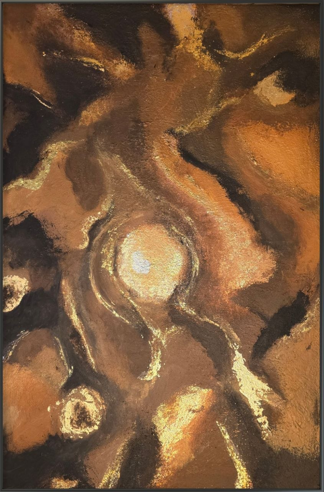
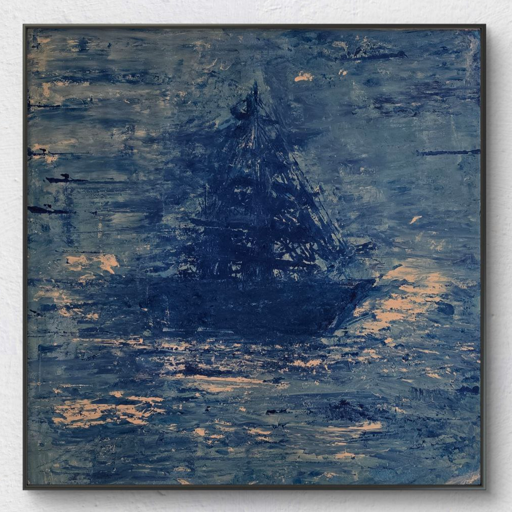
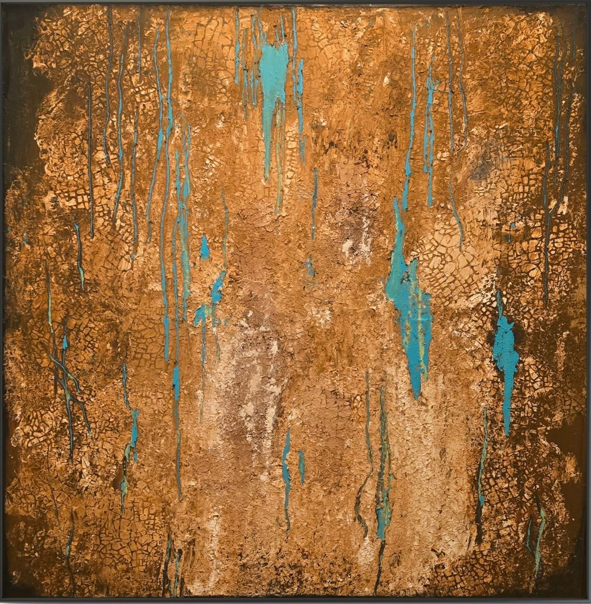
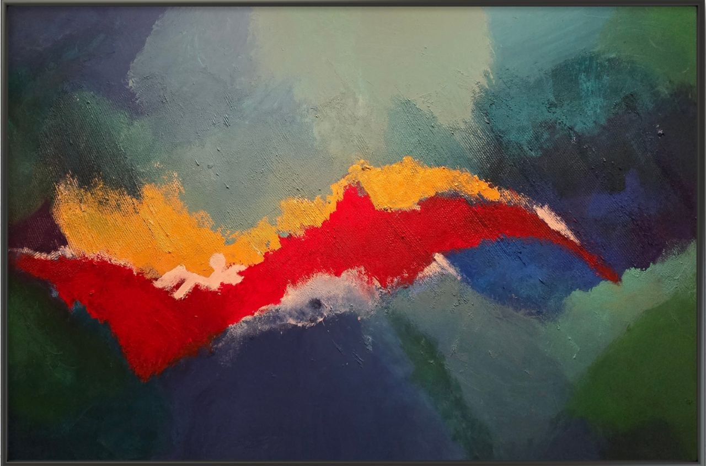
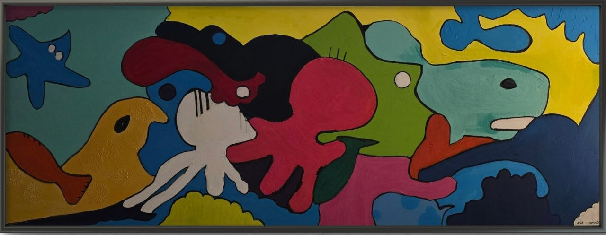

Munich · Handmade · Unique
Colors of Inspiration
Abstrakte Acrylbilder — handgemalt mit Leidenschaft. Jedes Werk trägt die Energie des Augenblicks in sich.
Galerie entdecken
Ausgewählte Werke
Jüngste Arbeiten




